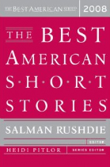
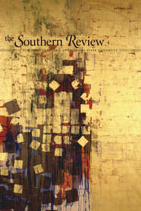

Buying Lenin: Story Excerpt

You can hear Salman Rushdie speak briefly of my story on the Leonard Lopate
Show.
You can also read my brief essay on
how I wrote
"Buying Lenin" published at the end of the Best American anthology.

When Grandpa learned I was leaving for America to study, he
wrote me a good-bye note. "You rotten capitalist pig," the note
read, "have a safe flight. Love, Grandpa." It was written on a
creased red ballot from the 1991 elections, which was a cornerstone
in Grandpa’s communist ballot collection, and it bore the signatures
of everybody in the village of Leningrad. I was touched to receive
such an honor, so I sat down, took out a one dollar bill, and wrote
Grandpa the following reply: "You communist dupe, thanks for the
letter. I’m leaving tomorrow, and when I get there I’ll try to marry
an American woman ASAP. I’ll be sure to have lots of American
children. Love, your grandson."
**
There was no good reason for me to be
in America. Back home I wasn’t starving, at least not in the
corporeal sense. No war had driven me away or stranded me on foreign
shores. I left because I could, because I carried in my blood the
rabies of the West. In high school, while most of my peers were busy
drinking, smoking, having sex, playing dice, lying to their parents,
hitchhiking to the sea, counterfeiting money, or making bombs for
soccer games, I studied English. I memorized words and grammar rules
and practiced tongue twisters, specifically designed for Eastern
Europeans. Remember the money, I repeated over and over again down
the street, under the shower, even in my sleep. Remember the money,
remember the money, remember the money. Phrases like this, I’d
heard, helped you break your tongue.
My parents must have been proud to
have such a studious son. But no matter how good my grades, Grandpa
never brought himself to share their sentiments. He despised the
West, its moral degradation and lack of values. As a child, I could
read only those books he deemed appropriate. Party Secret was
appropriate. Treasure Island was not. The English language, Grandpa
insisted, was a rabid dog and sometimes a single bite was all it
took for its poison to reach your brain and turn it to crabapple
mash.
"Do you know, sinko," Grandpa asked
me once, "what it is like to have crabapple mash for brains?" I
shook my head, mortified. "Read English books, my son, and find out
for yourself."
The first few years after my
grandmother’s death, Grandpa stayed in his native village, close to
her grave. But after a minor stroke, my father convinced him to come
back to Sofia. He arrived at our threshold with two bags – one full
of socks, pants and drawers, the other of dusty books. "An
educational gift," he said, hung the bag over my shoulder and
tousled my hair, like I was still a child.
Every week, for a few months, he fed
me a different book. Partisans, plots against the tsarist regime.
"Grandpa, please," I’d say. "I have to study."
"What you have to do is acquire a
taste." He’d leave me to read and barge into my room a minute later
with some weak excuse. Had I called him? Did I need help with a
difficult passage?
"Grandpa, these are children’s
books."
"First children’s books, then
Lenin’s." He’d sit at the foot of my bed, and motion me to keep on
reading.
If I came home from school frightened
because a stray dog had chased me down the street, Grandpa would
only sigh. Could I imagine Kalitko the shepherd scared of a little
dog? If I complained of bullies Grandpa would shake his head.
"Imagine Mitko Palauzov whining."
"Mitko Palauzov was killed in a
dugout."
"A brave and daring boy indeed,"
Grandpa would say and pinch his nose to stop the inevitable tears.
And so one day I packed up the books
and left them in his room with a note. Recycle for toilet paper.
Next time he saw me, I was reading The Call of the Wild.
From then on Grandpa
listened to the radio a lot, read the communist newspaper Duma and
the collected volumes of his beloved Lenin. He smoked unfiltered
cigarettes on the balcony and recited passages from volume twelve to
the sparrows along the TV antenna. My parents were concerned. I was
truly amused.
"Did you hear, Grandpa," I asked him
once, "about the giraffe who could fly?"
"Giraffes can’t fly," he said. I told
him I’d just read so in Duma, on the front page at that, and he
rubbed his chin. He pulled on his mustache. "Perhaps a meter or
two?" he said.
"Did you hear, Grandpa," I kept on
going, "that last night in Moscow Yeltsin fed vodka to Lenin’s
corpse? They killed the bottle together and, hand in hand, zigzagged
along the square."
There was something exhilarating
about teasing Grandpa. On one hand I was ashamed, but on the other—
Sometimes, of course, I went too far and so he tried to smack me
with his cane. "Why aren’t you five again?" he’d say. "I’d make your
ears like a donkey’s."
It was not the teasing, but rather the sight of me hunched over an
abridged edition of the Oxford English Dictionary, that finally
drove Grandpa back to his native village. When my father asked for
an explanation, he could not let himself admit the real reason. "I’m
tired of looking at walls," he said instead. "I’m tired of watching
the sparrows shit. I need my Balkan slopes, my river. I need to tidy
your mother’s grave." We said nothing on parting. He shook my hand.
Without Grandpa to distract me, I
focused on my studies. It had become popular at that time for kids
to take the SAT and try their luck abroad. Early in the spring of
1999 I got admitted to the University of Arkansas and my scores were
good enough to earn me a full scholarship, room and board, even a
plane ticket.
My parents drove me to Grandpa’s
village house so I could share the news with him in person. They did
not believe that phones could handle important news.
"America," Grandpa said when I told
him. I could see the word dislodge itself from his acid stomach,
stick in his throat and be expelled at last onto the courtyard
tiles. He watched me and pulled on his mustache.
"My grandson, a capitalist," he said.
"After all I’ve been through."
**
What Grandpa had been through was
basically this:
The year was 1944. Grandpa was in his
mid-twenties. His face was tough but fair. His nose was sharp. His
dark eyes glowed with the spark of something new, great, and
profoundly world-changing. He was poor. "I," he often told me,
"would eat bread with crabapples for breakfast. Bread with
crabapples for lunch. And crabapples for dinner, because by
dinnertime, the bread would be gone."
That’s why when the Communists came
to his village to steal food, Grandpa joined them. They had all run
to the woods where they dug out underground bunkers, and lived in
them for weeks on end—day and night, down there in the dugouts.
Outside, the fascists sniffed for them, trying to hunt them down
with their Alsatians, with their guns and bombs and missiles. "If
you think a grave is too narrow," Grandpa told me on one occasion,
"make yourself a dugout. No, no, make yourself a dugout and get
fifteen people to join you in it for a week. And get a couple
pregnant women, too. And a hungry goat. Then go around telling
everybody a grave is the narrowest thing on earth."
"Old man, I never said a grave was
the narrowest thing."
"But you were thinking it."
So finally, Grandpa got too hungry to
stay in the dugout and decided to strap on a shotgun and go down to
the village for food. When he arrived, he found everything changed.
A red flag was flapping from the church tower. The church had been
shut down and turned into a meeting hall. There had been an
uprising, the peasants told him, a revolution which overthrew the
old regime. While Grandpa was hiding in the dugout, Communism
sprouted fragrant blooms. All people now walked free, and their dark
eyes glowed with the spark of something new, great, and profoundly
world-changing. Grandpa fell to his knees and wept and kissed the
soil of the motherland. Immediately, he was assimilated by the
Party. Immediately, as a heroic partisan who’d suffered in a dugout,
he was given a high position in the Fatherland Fund. Immediately, he
climbed further up the ladder and moved to the city, where he became
something-something of the something-something department. He got an
apartment, married Grandma; a year later my father was born.
Table of Contents
There are eight stories in East of the West. Here you can find either the opening paragraph of each or an excerpt that I thought captures the story's voice.
Introduction
Makedonija
East of the West
Buying Lenin
The Letter
A Picture With Yuki
Cross Thieves
The Night Horizon
Devshirmeh
First Bulgarian Empire* Brief Timeline